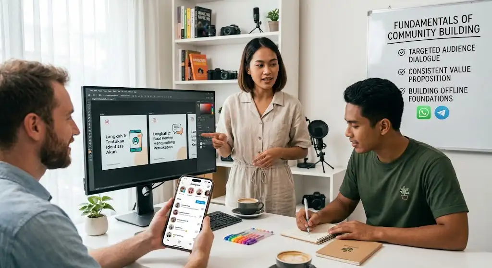

Algoritma Sering Berubah? Ini Cara Cerdas Membangun Komunitas Setia di Instagram
Pernahkah Anda merasa jangkauan konten tiba-tiba turun padahal kualitas postingan tidak berubah? Banyak kreator dan pemilik bisnis mengalaminya. Instagram rutin memperbarui cara kerjanya, mulai dari prioritas Reels dan rekomendasi konten hingga cara menampilkan Stories dan akun yang tidak diikuti. Setiap perubahan memunculkan kepanikan baru: "Apakah akun saya kena shadowban?" atau "Format apa yang sekarang disukai algoritma?"
Mengejar algoritma terus-menerus melelahkan dan hasilnya tidak pasti. Strategi yang lebih tahan lama adalah membangun komunitas yang peduli pada Anda, bukan sekadar pada algoritma. Audiens yang loyal akan mencari, menyimpan, membalas, dan membagikan konten Anda, apa pun format yang sedang populer.
Daftar Isi
Poin Penting (Key Takeaways)
- Komunitas loyal lebih berharga dan bertahan lama dibandingkan mengejar algoritma yang selalu berubah.
- Konten yang interaktif (bertanya, memancing diskusi) jauh lebih efektif dibanding sekadar "menyiarkan".
- Interaksi dua arah melalui DM dan komentar sangat penting untuk membangun kedekatan audiens.
- Fitur seperti Stories, Broadcast Channel, dan Live adalah alat kunci untuk membangun rasa kepemilikan.
Mengapa Komunitas Lebih Penting daripada Algoritma
Pada dasarnya, algoritma Instagram berusaha menampilkan konten yang paling mungkin disukai dan direspons pengguna. Karena itu, sinyal interaksi seperti waktu menonton, komentar, simpan, bagikan, dan pesan langsung menjadi sangat penting. Detail teknisnya bisa berubah, tetapi prinsipnya stabil: konten yang membuat orang terlibat akan mendapat panggung lebih luas.
Di sinilah komunitas berperan. Pengikut yang merasa terhubung akan berinteraksi dengan sendirinya, sehingga Anda tidak bergantung pada satu format atau trik tertentu. Angka pengikut yang besar pun tidak berarti banyak jika sebagian besar akun diam. Seratus pengikut yang aktif sering lebih berharga daripada seribu pengikut yang pasif.
1. Kenali Audiens dan Tentukan Identitas Akun
Komunitas terbentuk dari kesamaan minat atau nilai. Sebelum memikirkan konten, jawab tiga pertanyaan ini:
- Siapa yang ingin Anda layani? Semakin spesifik, semakin kuat ikatannya.
- Masalah atau kebutuhan apa yang Anda bantu selesaikan?
- Apa yang membuat akun Anda berbeda? Bisa gaya bahasa, sudut pandang, atau pengalaman pribadi.
Akun dengan identitas jelas lebih mudah diingat. Orang tahu apa yang akan mereka dapat ketika mengikuti Anda, dan itu alasan kuat untuk bertahan.
2. Buat Konten yang Mengundang Percakapan
Konten yang bagus tidak berhenti pada informasi, tetapi membuka ruang diskusi. Beberapa cara praktisnya:
- Akhiri dengan pertanyaan spesifik. "Menurut kalian bagaimana?" terlalu umum. "Mana yang lebih sering kamu alami: kesulitan membuat ide atau kesulitan konsisten?" lebih mudah dijawab.
- Angkat cerita dan pengalaman nyata. Cerita personal terasa lebih manusiawi dan mendorong orang berbagi pengalamannya.
- Buat konten yang layak disimpan dan dibagikan, seperti panduan langkah demi langkah, checklist, atau template. Simpan dan bagikan adalah tanda bahwa konten benar-benar bermanfaat.
- Variasikan format. Gabungkan carousel, Reels, foto, dan Stories agar menjangkau audiens yang berbeda, tetapi jangan memaksakan format yang tidak sesuai dengan karakter Anda.

3. Hadir dan Berinteraksi Dua Arah
Komunitas tidak tumbuh jika akun hanya "menyiarkan". Perlakukan kolom komentar dan DM sebagai ruang bertemu, bukan sekadar notifikasi.
- Balas komentar dengan tulisan yang bermakna, bukan hanya emoji. Pertanyaan lanjutan bisa memperpanjang percakapan.
- Sapa pengikut baru atau yang aktif secara personal. Sapaan kecil sering meninggalkan kesan besar.
- Berinteraksi di akun lain yang segmennya sama. Komentar yang tulus bisa mengarahkan orang baru ke profil Anda.
- Sebut dan apresiasi anggota komunitas, misalnya dengan membagikan ulang cerita mereka (dengan izin) atau menjawab pertanyaan mereka dalam konten khusus.
Luangkan waktu terjadwal setiap hari untuk berinteraksi. Konsistensi lebih penting daripada durasi.
4. Manfaatkan Fitur yang Mendorong Kedekatan
Instagram menyediakan banyak fitur yang mempermudah hubungan lebih personal:
- Stories interaktif seperti polling, kuis, kotak pertanyaan, dan slider membuat audiens merasa dilibatkan dalam proses, bukan hanya menonton hasil.
- Broadcast Channel cocok untuk berbagi kabar, di balik layar, atau kejutan eksklusif kepada pengikut paling setia.
- Live memungkinkan tanya jawab langsung yang membangun kepercayaan.
- Close Friends bisa dipakai untuk konten lebih personal kepada lingkaran terdekat.
Ketersediaan dan nama fitur dapat berubah, jadi periksa pembaruan terbaru di aplikasi Anda.
5. Konsisten, tetapi Realistis
Komunitas dibangun lewat kebiasaan. Audiens perlu tahu kapan dan seperti apa Anda hadir. Namun, konsisten tidak berarti harus posting setiap hari sampai kehabisan tenaga.
- Tentukan frekuensi yang sanggup dijaga dalam jangka panjang, misalnya tiga sampai empat kali seminggu.
- Gunakan pilar konten (misalnya edukasi, cerita, ajakan diskusi, dan promosi) agar ide tidak mudah habis.
- Rencanakan dan produksi konten secara berkelompok (batching) agar kualitas tetap terjaga.
- Evaluasi secara berkala lewat Instagram Insights untuk melihat konten mana yang paling memicu simpan, bagikan, dan komentar.
6. Bangun Nilai Bersama, Bukan Hanya Jualan
Komunitas yang kuat punya tujuan yang dirasakan bersama. Orang bertahan bukan hanya karena kontennya bagus, tetapi karena merasa menjadi bagian dari sesuatu. Anda bisa menumbuhkannya dengan:
- Membuat nama atau sebutan khusus untuk komunitas.
- Menggagas tantangan atau gerakan bersama, seperti tantangan 7 hari atau sesi belajar bareng.
- Menjaga suasana yang aman dan suportif dengan aturan jelas dan moderasi yang adil.
- Menyeimbangkan promosi dan nilai. Prinsip sederhananya: berikan manfaat jauh lebih banyak daripada ajakan membeli.
Ketika kepercayaan sudah terbangun, penawaran produk atau jasa terasa wajar, bukan mengganggu.
7. Siapkan Fondasi di Luar Instagram
Karena platform dan algoritmanya bukan milik Anda, jangan menaruh seluruh komunitas di satu tempat. Arahkan pengikut yang paling terlibat ke saluran yang lebih Anda kendalikan, misalnya newsletter email, grup WhatsApp atau Telegram, atau situs pribadi. Dengan begitu, jika jangkauan Instagram turun atau akun bermasalah, hubungan dengan audiens tetap aman.
Kesalahan Umum yang Perlu Dihindari
- Terlalu fokus mengejar format trending tanpa memikirkan kualitas interaksi.
- Mengabaikan DM atau komentar dari pengikut setia.
- Terlalu sering berjualan ("hard selling") sehingga followers merasa dieksploitasi.
- Membeli followers palsu yang pada akhirnya justru merusak performa algoritma.
Algoritma Instagram akan terus berubah, dan itu di luar kendali Anda. Yang bisa Anda kendalikan adalah kualitas hubungan dengan audiens. Fokuslah pada hal-hal berikut: Kenali dan layani audiens yang spesifik, buat konten bermanfaat, hadir secara tulus di komentar/DM, gunakan fitur interaktif, jaga konsistensi, tumbuhkan nilai bersama, dan perkuat fondasi di luar satu platform.
Algoritma boleh berganti, tetapi komunitas yang percaya dan merasa dihargai akan tetap tinggal. Mulailah dari langkah kecil hari ini: balas lima komentar dengan sepenuh hati, dan lihat bagaimana percakapan itu tumbuh.